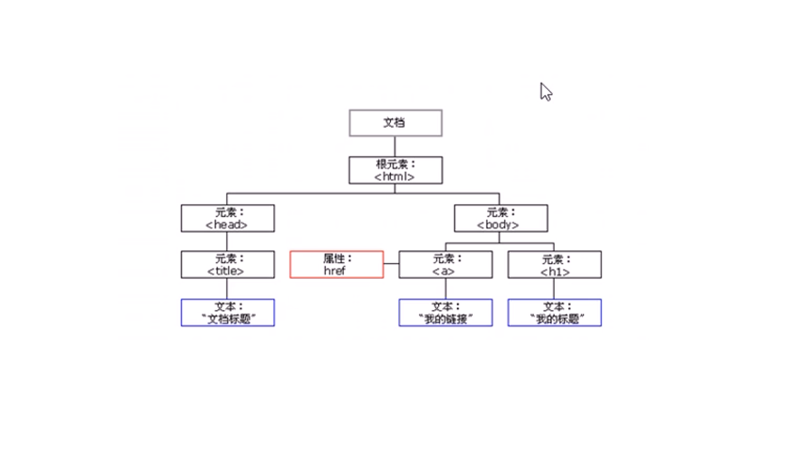

文档对象模型(Document Object
Model),是W3C组织推荐的处理可扩展标记语言（HTML或者XML）的标准编程接口。
w3c已经定义了一系列的DOM接口，通过这些DOM接口可以改变网页的内容、结构和样式。
1.对于javascript,为了能够使js操作HTML,js就有了一套自己的DOM接口
2.对于HTML，dom使得html形成一棵DOM树，包含文档、元素、节点

注意：我们获取过来的DOM元素是一个对象，所以称为文档对象模型
关于DOM操作，我们主要针对元素的操作。主要有创建、增、删、改、查、属性操作、事件操作
-
创建
- 1.document.write
- 2.innerHTML
- 3.element.createElement
-
增
- 1.element.append();把括号里的参数添加到element节点的子节点最后一个
- 2.element.insertBefore(a,b);把a添加到element节点的子节点b之前
-
删
- 1.element.removeChild();删除element节点的某个子节点
-
改：主要修改dom元素的属性，dom元素的内容、属性、样式、表单
- 1.修改内容：element.innerHTML和element.innetText
- 2.修改属性：src,href,title,alt,id
- 3.修改样式：element.style.attribute和element.className
- 4.修改表单：表单的属性value,type,checked,selected,disabled
-
查：主要获取查询DOM的元素
- 1.DOM提供的API方法：getElementById、getElementsByTagName、古老用法不太推荐
- 2.H5提供的新方法：querySeletor、querSelectorAll提倡
- 3.利用节点操作获取元素：
父：parentNode、
子：childNode、firstChild、lastChild、children、firstElementChild、lastElementChild、
兄：previousElement、nextElementChild、previousChild、nextChild
-
属性操作
- 1.setAttribute 设置属性
- 2.getAttribute 获取属性
- 3.removeAttribute 移除属性
-
给元素注册事件，采取事件源.事件类型 = 事件处理程序
| 鼠标事件 |
触发条件 |
| onclick |
鼠标点击左键触发 |
| onmouseover |
鼠标经过触发 |
| onmouseout |
鼠标离开触发 |
| onfocus |
获得鼠标焦点触发 |
| onblur |
失去鼠标焦点触发 |
| onmousemove |
鼠标移动触发 |
| onmouseup |
鼠标弹起触发 |
| onmousedown |
鼠标按下触发 |